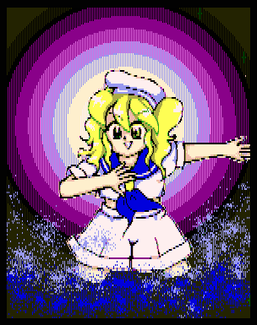
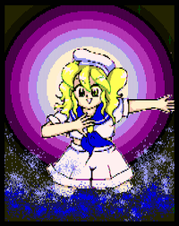

- Welcome to Touhou Wiki!
- Please register to edit. For assistance, check in with our Discord server or IRC channel.
Chiyuri Kitashirakawa
Chiyuri Kitashirakawa kitäɕiɺ̠äsäɰᵝä t͡ɕijɯᵝɾi Tiyuri Kitashirakawa | |
|---|---|
|
 Chiyuri Kitashirakawa in Phantasmagoria of Dim.Dream Resident of Fantasy That Runs Through TimeMore Character Titles | |
| Species | |
| Abilities |
Artificial Magic |
| Age |
15 |
| Occupation |
Assistant professor |
| Location |
Probability Space Hypervessel, from the Outside World |
Music Themes | |
| |
Appearances | |
| Official Games | |
| |
Chiyuri Kitashirakawa (北白河 ちゆり Kitashirakawa Chiyuri) is a graduate school alumnus from the outside world and Yumemi Okazaki's assistant who helps her to collect data on magic. She follows Yumemi into Gensokyo on the Probability Space Hypervessel in order to further that goal.
Character Basis[edit]
Name[edit]
Her full name is Chiyuri Kitashirakawa (北白河 ちゆり), where Kitashirakawa (北白河) means "north white river".
Design[edit]
Chiyuri's design shows that she has blonde hair and yellow eyes. She wears a white sailor uniform with a shade of blue which looks too small for her and has a blue neckerchief, a white hat and a blue ribbon. Her alternative outfit is the same, except her sailor uniform now appears to have a shade of red with a red ribbon.
Story[edit]
- Phantasmagoria of Dim.Dream
- Main article: Phantasmagoria of Dim.Dream Chiyuri's Scenario
During Phantasmagoria of Dim.Dream Chiyuri wrote an invitation flier with promises of wishes being granted to lure people to the "ruins" (which later turned out to be a ship). After pitting the various heroines against each other so that only the strongest one would make it inside, she drew a gun on the surviving heroine to force her to cooperate because it was more fun that way. This turned out to be completely different from how Yumemi had wanted the situation handled, and Chiyuri was forced to fight the heroine so that Yumemi could collect research data about magic. Chiyuri was defeated much sooner than Yumemi had expected.
Chiyuri is currently believed to still be in Gensokyo along with Yumemi after her professor was kicked out of the Academy, because of the final ending of Phantasmagoria of Dim.Dream.
In Chiyuri's own scenario, she is a native inhabitant of Gensokyo who can use magic, and is one of the many heroines who fight each other to gain access to the ruins. Inside, she is confronted by herself from another world, fighting with her to decide who's the stronger one, and goes on to battle Yumemi, who wishes to study her magic. This is, however, confusing.
Relationships[edit]
- Yumemi Okazaki (Senior)
Additional Information[edit]
- Chiyuri's appearance and speech patterns are based off of Eriko Asagaoka from Izumi Takemoto's manga Apple Paradise.
- Not counting Hieda no Akyuu, who never appears in any game in the series, Chiyuri is thought to be the youngest character in the Touhou Project whose actual age is known. If any other character was younger at the time they first appeared in a game, their real age has never been revealed. It should be noted, however, that almost no one in Touhou has a known age.
- Chiyuri appears on the cover of Phantasmagoria of Dim.Dream along with all the other characters in that game.
- Because of her clothes, she is thought to be the inspiration for Minamitsu Murasa of Undefined Fantastic Object.
- It is implied that her world of origin may not be the Outside World as we know it, but rather some separate world, because a grand unified theory has been completed, and children graduate from graduate school at the age of thirteen. Supporting this theory is the fact that Gensokyo appears to have its own version of Chiyuri, implying that the Probability Space Hypervessel comes from some alternate dimension altogether.
Fandom[edit]
Official Profiles[edit]
|  |
★ 時をかける夢幻の住人 ・・・ 北白河 ちゆり
比較物理学を専攻し、当然頭もかなりきれます。
|
★ Resident of fantasy that runs through time ... Chiyuri Kitashirakawa
A girl with a somewhat odd way with words. She's Yumemi's rather outspoken assistant; she seems to be able to speak frankly with her. She may look immature, but she's 15 (probably immature). She left graduate school and works as an assistant at a university. (In this world, you graduate from college at 11, and leave graduate school at 13.) She's specializing in comparative physics, so she's obviously pretty sharp. Right now her primary tasks are things like organizing the data Yumemi collects. |
Official Sources[edit]
- 1997/12/29 Phantasmagoria of Dim.Dream - Dialogue, endings, profile
| This page is part of Project Characters, a Touhou Wiki project that aims to write proper descriptions for all official characters of Touhou Project. Please keep the character page guidelines in mind when contributing. |